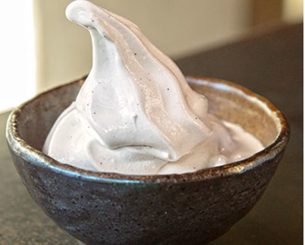

Homemade Soft Serve Ice Cream
INGREDIENTS :
- 1/2 c. heavy cream
- 1 tbsp. powdered sugar
- 3 c. vanilla ice cream, softened
- 2 ice cream cones, for serving
- rainbow sprinkles, for topping
METHOD :
- In a large bowl using a handheld electric mixer, beat cream until medium peaks form, 2 to 3 minutes. Add sugar and beat 30 seconds more.
- Stir in ice cream until completely combined, then transfer mixture to a large resealable bag and freeze until firm, 3 to 4 hours.
- Remove ice cream from freezer and knead until soft, 1 minute.
- Snip a corner from the bag and pipe into a cone. Top with sprinkles and serve immediately.